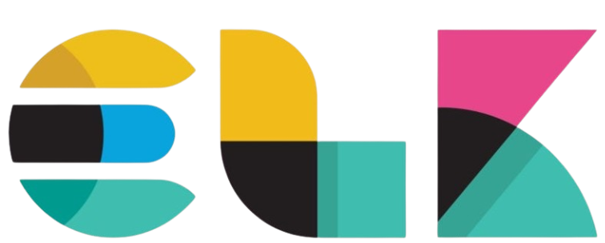
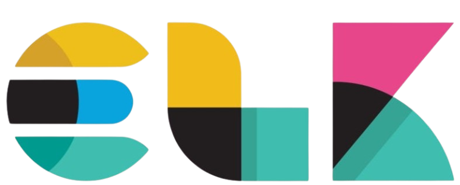
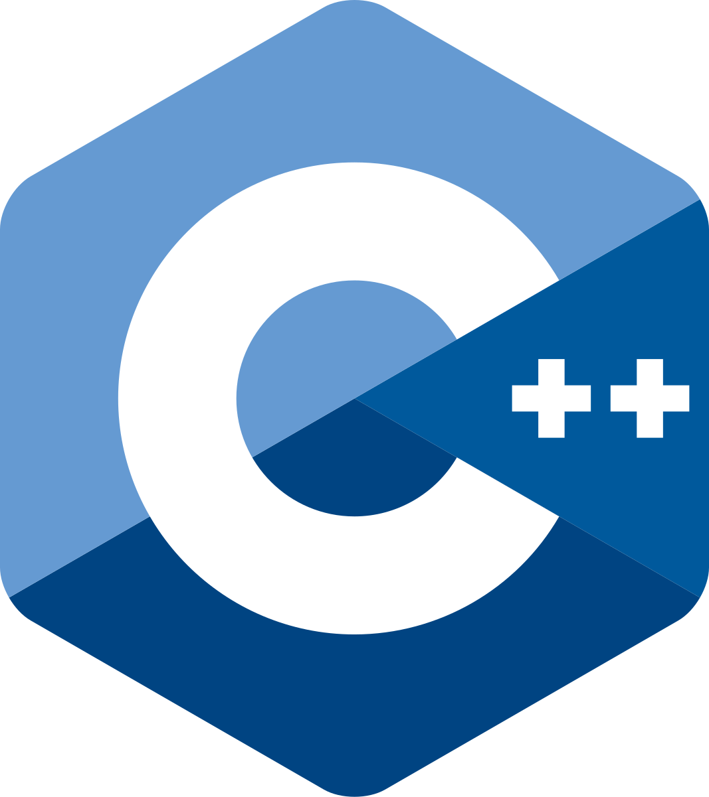
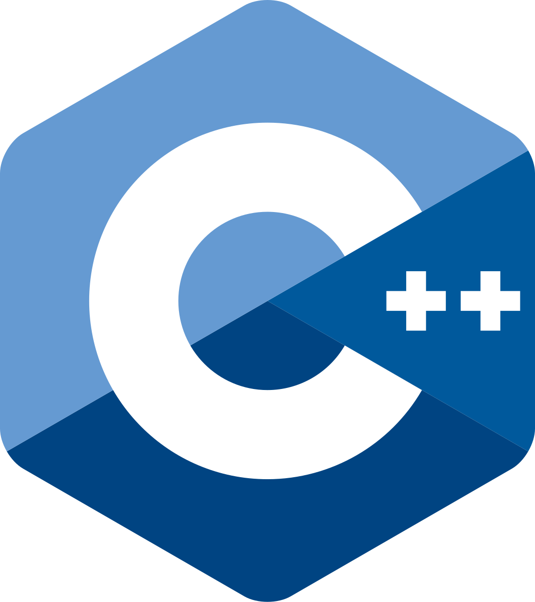

×

Building robust software solutions and safeguarding the digital landscape.
Penetration Testing and Report writing
Network Security Engineering
Threat Detection
LAMP Stack Development and Security
Simulation Report Writing
Frontend and UI/UX Design
 Ubuntu
 ELK
Hydra
Ubuntu
 ELK
Hydra
 Nessus
Hashcat
OWASP
Kali Linux
Nessus
Hashcat
OWASP
Kali Linux
 Rust
Python
Node.js
Nginx
MySQL
 C++
PHP
MariaDB
Bash
Rust
Python
Node.js
Nginx
MySQL
 C++
PHP
MariaDB
Bash
 GitHub
Express.js
Apache
GitHub
Express.js
Apache
 APIs
APIs
Hands-on experience in software engineering and cybersecurity research and implementation
Proud to have placed in the top 3 of the inaugural Moringa Cyber Knights CTF!, specializing in web exploitation, SQL injection exploitation,Hash cracking, and privilege escalation techniques.
Demonstrated expertise in exploiting Metasploitable 3 vulnerabilities, including privilege escalation and post-exploitation strategies.
Acquired foundational JavaScript skills, enabling dynamic web development and interactive user experiences.
Enhanced JavaScript expertise with advanced concepts, including asynchronous programming and object-oriented design.
Gained hands-on experience in network design, troubleshooting, and simulation using Cisco Packet Tracer.
Validated skills in API security, including authentication, authorization, and protection against common vulnerabilities.
Created a functional Express.js server to manage HTTP requests and responses, showcasing middleware usage and RESTful API design. Designed and implemented a JavaScript API for managing data operations with a focus on secure and efficient endpoint handling.
Validated skills in full stack development, including building dynamic web applications, managing databases, and deploying scalable solutions.
Validated skills in security fundamentals, risk analysis, and policy controls.
Monitored real-time security threats and anomalies using Splunk and ELK stack for enterprise environments.
Performed in-depth traffic analysis to identify suspicious activity, troubleshoot networks, and gain insights into application-layer communications.
Utilized Burp Suite for web app security testing, including request interception, scanning, fuzzing, and vulnerability exploitation.
Explored the Heartbleed OpenSSL flaw by testing its impact on vulnerable systems and extracting sensitive data from memory.
Built a comprehensive home laboratory with Kali Linux, Metasploitable, and Windows VMs for red team and blue team security simulations.
Conducted comprehensive security assessments using automated scanning tools and manual testing methodologies to identify critical vulnerabilities.
Developed comprehensive security policies and incident response procedures following industry best practices and compliance frameworks .
Implemented security configurations and hardening procedures for enterprise networks, reducing attack surface and improving overall security posture.
Get in touch with me via social media or send me an email. 😉